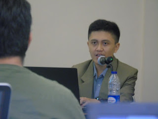

Berdasarkan saya master ataupun spesialis dan ahli seo terbaik di Lhokseumawe telah banyak yang menampakkan taringnya, beberapa di antara mereka juga membuka pelayanan jasa seo dan kursus seo serta belajar dunia online marketing. Sehingga bagi Anda yang ingin mengaplikasikan jasa dari mereka, Anda tidak perlu lagi bersusah payah untuk mencarinya. Anda cukup menjalankan pencarian di search engine Google dengan kata kunci sesuai judul pada tema yang saya bahas pada kans ini.
Ada banyak fenomena unik pada pembahasan kita kali ini, yaitu banyaknya orang yang mengejar kata kunci/keyword spesialis seo maupun ahli seo atau master seo terbaik di Lhokseumawe. Tidak mengerti mengapa, tetapi yang jelas ini ialah sebuah pembuktian oleh seseorang yang mau eksis dan mengaku dirinya dengan gelar hal yang demikian, ketika blog/websitenya berada pada posisi teratas serp. Ada beberapa laman yang bertengger disposisi top 1 serp Google dengan kata kunci hal yang demikian, nah sekiranya anda menemukan web berada di urutan 1 – 5 teratas di mesin pencari itu artinya beliau lah yang merupakan master SEO Indonesia yang sebetulnya.

Menurut saya orang yang ahli dibidang SEO itu yaitu mereka yang mendominasi kejuaraan diberbagai kontes seo. Alasannya benar-benar sederhana, pada persaingan ini semua peserta akan mengoptimasi 1 kata kunci yang sudah di tetapkan oleh panitia dangan jangka waktu tertentu. Sehingga akan terjadi kompetisi sengit diantara pesertanya untuk berada di peringkat teratas serp. Oleh karena itu, dikala dikala penguman kontes karenanya yang menjuarai kontes tersebutlah yang mempunyai teknik dan strategi SEO yang terbaik. Nah, yang menjadi pertanyaannya adalah apakah orang yang webnya berada diposisi 5 besar dengan kata kunci pantas judul di atas berani menandakan kemampuannya di arena kontes seo. Sebagaimana telah tertulis di wikipedia, yang mengistilahkan kata ahli adalah orang yang memiliki kesanggupan dan teknik terpercaya atau berpengalaman dan berpengetahuan luas dibidang studi tertentu.
Keahlian Ahli SEO yang Perlu Anda Ketahui!
Sangking banyaknya beredar di dunia online orang yang mengaku sebagai spesialis atau ahli seo, sebagai orang yang umum sekali-sekali kita linglung yang mana diantara mereka yang mamang benar-benar spesialis ketika kita ingin mengaplikasikan jasa seo. Ya… seperti yang telah aku sampaikan tadi, mereka beradu tanding membidik kata kunci tersebut denagn alih-alih menerima banyak klien. Mudah kebanyakan diantara mereka hanya memahami SEO itu sekadar kulitnya, menunjukkan portofolio atas web yang dioptimasinya, melainkan enggan mengedukasikan kepada calon kliennya perihal seberapa besar saingan atas kata kuncinya.
Sedikit pemahaman seputar SEO, sejauh ini saya hanya menilai jurus dari Ahli SEO Syamsul Alam di Lhokseumawe lah yang paling aman (White Hat SEO), dia telah berpuluh-puluh kali mengoptimasi puluhan situs serta menjuarai pelbagai kontes seo. SEO itu adalah seni dan sifatnya universal, artinya banyak unsur yang memberi pengaruh posisi sebuah web untuk tampil berada dihalaman terbaik serp dan hanya beberapa orang yang memahami bagaimana serp Google berjalan ini lah yang dapat menyaingi situs lain. Diantaranya ialah kesesuain antara judul dengan deskripsi, struktur data, strategi tautan building, usia situs, dan masih banyak lainnya. Selain pada dasarnya SEO itu cuma terbagi menjadi dua komponen, diantaranya ialah SEO On Page dan SEO Off Page. Oleh sebab itu ketika Anda melaksanakan kekeliruan dalam taktik SEO ketika mengoptimasi web, maka dampaknya akan betul-betul fatal. Apalagi kini ketika artikel ini di publikasikan, Google semakin ketat untuk memfilter situs maupun blog yang “tidak sehat” dalam pengoptimalan di mesint telusur. Sehingga bukan menerima posisi yang baik, malahan terkena penalty dan masuk kedalam Google Sandbox.
Pesan saya kepada Anda adalah, jangan buang uang Anda dengan menggunakan jasa seo dari vendor jasa seo abal-abal. rugi di waktu, Anda juga rugi secara materi dan tak mewujudkan apa-apa. Pilihlah orang-orang yang berprestasi, berpengalaman, dan memiliki portofilio yang cukup dan nyata, tidak kalah pentingnya lagi dapat diandalkan.
Resources Link:
- http://www.wseeker.com/pakar-seo-lhokseumawe/
- http://antoniclianto.com/belajar-bisnis-online-dengan-syamsul-alam/
- http://www.iosa.web.id/uncategorized/jasa-online-reputation-management-syamsul-alam/
- http://www.delpozo.com.br/wiki/index.php?title=Praktisi_Pemasaran_Digital_Jakarta_Pusat_Syamsul_Alam_-_Telp_%E2%98%8E_0812_3383_81731937884
- https://www.dis.or.id/other/jasa-online-reputation-management-syamsul-alam/
- https://nazamitralala.wordpress.com/2015/03/09/belajar-bisnis-online-dengan-syamsul-alam/